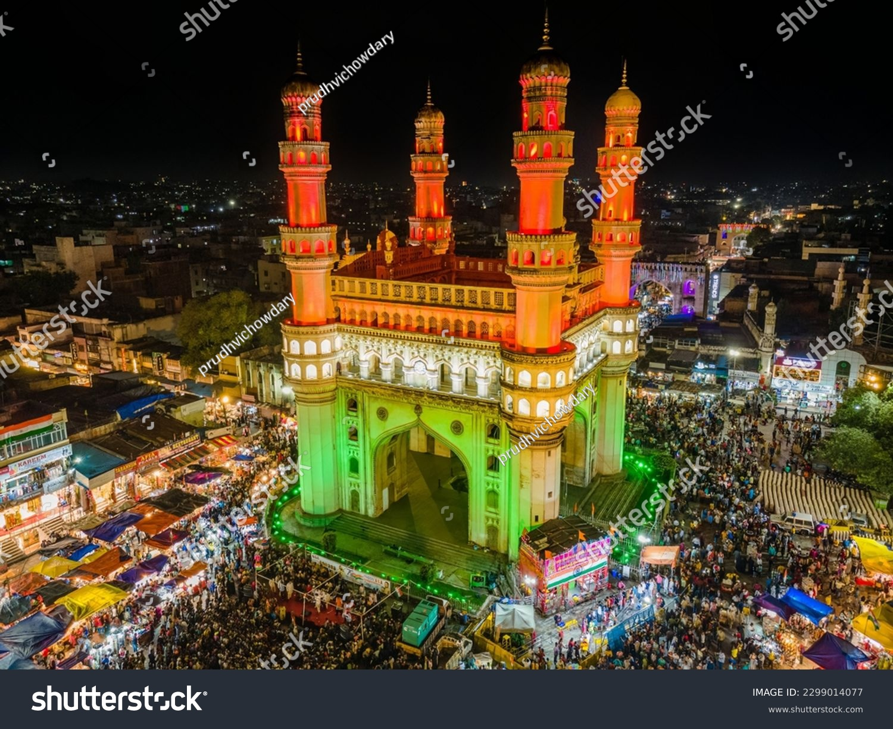

Hello website users,You can know my details above.Travelling is my hobby.Travelling makes me feel happy and gives joy.So I want to give some suggestions on touristplaces in India who want to go for a trip please visit this site
TOURISTSPOTS IN INDIA
Here are the some of the touristplaces to visit in India.India is one of the country which attracts
tourists.To watch the locations just scroll down.
Click on the image
then you will get an youtube video
regarding that picture.
The Taj Mahal is located on the right bank of the Yamuna River in a vast Mughal garden that encompasses nearly 17 hectares, in the Agra District in Uttar Pradesh. It was built by Mughal
Emperor Shah Jahan in memory of his wife Mumtaz Mahal with construction starting in 1632 AD and completed in 1648 AD, with the mosque, the guest house and the main gateway on the south, the outer
courtyard and its cloisters were added subsequently and completed in 1653 AD. The existence of several historical and Quaranic inscriptions in Arabic script have facilitated setting the chronology
of Taj Mahal. For its construction, masons, stone-cutters, inlayers, carvers, painters, calligraphers, dome builders and other artisans were requisitioned from the whole of the empire and also from
the Central Asia and Iran. Ustad-Ahmad Lahori was the main architect of the Taj Mahal.
CHARMINAR

Charminar was built by Sultan Mohammed Quli Qutb Shah in 1591. It is said that this square shaped structure with four pillars and intricate carvings was built in honour of his wife, Bhagmati. However,
the actual reason behind building Charminar is still not clear.
As per a popular belief, Charminar was built to acknowledge the elimination of the plague which had affected the entire city immensely during that era. It is believed that the Sultan had prayed for the end of this
plague with which his people were suffering. Hence, as the plague ended, he built the charminar as a tribute to Allah. The four pillars are also said to be dedicated to the first four caliphs of Islam.
It is also said that it was built in the memory of Prophet Muhammed’s son in law who lost his life at the battle of Karbala as its design is in the shape of Shiya Tazias. Some also believe that the location of Charminar
is the place where Sultan had seen his then future wife Bahgmati for the first time.
GOLDEN TEMPLE
The Golden temple is located in the holy city of the Sikhs, Amritsar. The Golden temple is famous for its full golden dome, it is one of the most sacred pilgrim spots for Sikhs. The Mandir is built on a 67-ft
square of marble and is a two storied structure. Maharaja Ranjit Singh had the upper half of the building built with approximately 400 kg of gold leaf. The Golden Temple is surrounded by a number of other famous temples
like the Durgiana Temple. The fourth Guru of Sikhs, Guru Ram Das, who had initially constructed a pool here, founded Amritsar, which houses the Golden Temple or Harmandir Sahib. It is here that Sage Valmiki wrote the epic,
Ramayana. The ‘Guru Ka Langar’ offers free food to around 20,000 people everyday. It was planted 450 years ago, by the Golden Temple’s first high priest, Baba Buddha. Guru-ka-Langar or the communal canteen is
towards the eastern entrance of the temple complex, and it provides free food to all visitors, regardless of colour, creed, caste or gender. Visitors to the Golden Temple must remove their shoes and cover their heads before
entering the temple. The temple is less crowded in the early mornings on weekends.
LOTUS TEMPLE
The Lotus Temple, located in Delhi, India, is a Bahá’í House of Worship that was dedicated in December 1986, costing $10 million. Notable for its flowerlike shape, it has become a prominent attraction in the city. Like all
Bahá’í Houses of Worship, the Lotus Temple is open to all, regardless of religion or any other qualification. The building is composed of 27 free-standing marble-clad “petals” arranged in clusters of three to form nine sides, with nine
doors opening onto a central hall with a height of slightly over 40 metres and a capacity of 2,500 people. The Lotus Temple has won numerous architectural awards and has been featured in many newspaper and magazine articles. A 2001 CNN
report referred to it as the most visited building in the world.
Lotus temple is situated near Nehru Place and Kalkaji Mandir metro station is just 500 meters away.
The temple is in the village of Bahapur in New Delhi, National Capital Territory of Delhi. The architect was an Iranian, Fariborz Sahba who now lives in Canada. He was approached in 1976 to design the Lotus Temple and later oversaw its
construction. The structural design was undertaken by the UK firm Flint and Neill over the course of 18 months. A portion of the construction budget was saved and used to build a greenhouse to study indigenous plants and flowers
that would be appropriate for use on the site.
It is Vanjangi Hills, known as the place to see some of the most beautiful sunrises. Located near Paderu, in the Eastern Ghats of Andhra Pradesh of the Visakhapatnam Agency, Vanjangi is a must-visit place for all the mountain trekkers.
Rising 3,400 feet above Mean Sea Level (MSL), the Vanjangi Hills are home to one of the most beautiful sunrises. They get their name from a village near Paderu in the Eastern Ghats of Andhra Pradesh, in Visakhapatnam district.
Normally, the peak winter season is the best time to visit Vanjangi hills to witness the kissing clouds. But, this year, even before the onset of the winter, Vanjangi turned most beautiful with clouds touching the peaks in the early morning,
said M Abhishek, a native of Paderu.
THOUSANDPILLAR TEMPLE
The most popular place to visit in Warangal is the Thousand Pillars Temple, located at the base of Hanamkonda hill. It was built in 12th century by the Kakatiya King Rudra Deva. Dedicated primarily to Lord Shiva, this temple is also known by
the name of Sri Rudreshwara Swamy Temple. At this temple, three deities- Lord Shiva, Lord Vishnu and Lord Surya are worshipped. They are known as Trikutalayam. There are three shrines, one for each deity.
Currently under the maintenance of Archaeological Survey of India, Thousand Pillar Temple is known for intricately carved pillars. A massive sculpture of Nandi, carved out of a single rock, is another attraction of this temple. Rock cut elephants and
exquisite engravings at the temple are also worth noticing.
Himalayas, great mountain system of Asia forming a barrier between the Plateau of Tibet to the north and the alluvial plains of the Indian subcontinent to the south. The Himalayas include the highest mountains in the world, with more than 110 peaks
rising to elevations of 24,000 feet (7,300 metres) or more above sea level. One of those peaks is Mount Everest (Tibetan: Chomolungma; Chinese: Qomolangma Feng; Nepali: Sagarmatha), the world’s highest, with an elevation of 29,032 feet (8,849 metres; see Researcher’s
Note: Height of Mount Everest. The mountains’ high peaks rise into the zone of perpetual snow.
North Face of Mount Everest, above the Tibet Autonomous Region of China.
For thousands of years the Himalayas have held a profound significance for the peoples of South Asia, as their literature, mythologies, and religions reflect. Since ancient times the vast glaciated heights have attracted the attention of the pilgrim mountaineers of
India, who coined the Sanskrit name Himalaya—from hima (“snow”) and alaya (“abode”)—for that great mountain system. In contemporary times the Himalayas have offered the greatest attraction and the greatest challenge to mountaineers throughout the world.